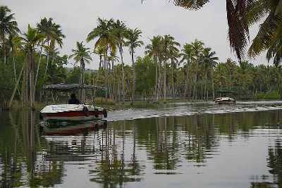
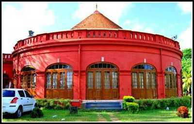

THIRUVANATHAPURAM
Neyyar Dam & Wildlife Sanctuary

Famous for its Lion and Deer Safari, Neyyar Wildlife Sanctuary is a treat for nature enthusiasts. The park houses a crocodile farm and elephant rehabilitation centre. Ask for a guided tour of the sanctuary which is quite informative.
Padmanabhaswamy Temple

One of the 108 Divya Desams, Sree Padmanabhaswamy Temple is located in Thiruvananthapuram, the capital city of Kerala. Embellished in gold-plated covering, the temple is opened only to Hindu followers. Dedicated to Lord Padmanabha; one of the avatars of Lord Vishnu, the Padmanabhaswamy Temple is one of the principal centres of Vaishnava worship in the dharma of Vaishnavism. Built as a replica of the Adikesavaperumal Temple in Thiruvattar, the Padmanabhaswamy temple is well-preserved antiquity. Although the origin of this temple still remains a mystery, devotees believe it to have existed since the first day of the Kali Yuga, which was 5000 years ago. The Padmanabhaswamy temple also has a mention in the Bhagwad Gita. The scripture states that Balarama, the older brother of Lord Krishna frequented the temple, bathed in the Padmatheertham and also made several offerings the deity here.
Poovar
Poovar is a small rustic town situated 27 kms from Thiruvananthapuram with unspoilt, unexplored golden sand beaches and beautiful backwaters of Kerala. Also known as a fishing village, the tranquil Poovar island lies between the Arabian Sea and the Neyyar River. Hiring a boat, (especially during the sunset)that will take you through the mangrove forest of backwaters is a must-do activity. The boat ride costs around INR 3000- INR 4000. The town has some of the beautiful resorts and hotels that are known for the hospitality they offer. Poovar beach is secluded and is only accessible by a boat. Swimming is allowed here throughout the year except for the monsoon months
Kanakakunnu Palace
Close to the Napier Museum, the Kanakakunnu Palace was built under the rule of Travancore King. Today, the palace is host to plethora of cultural programs that are held on its premises.